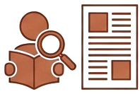
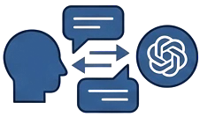
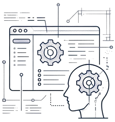
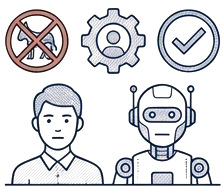
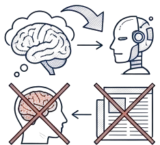
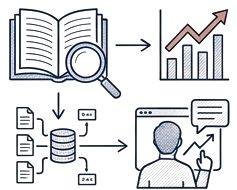
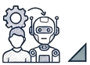
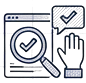
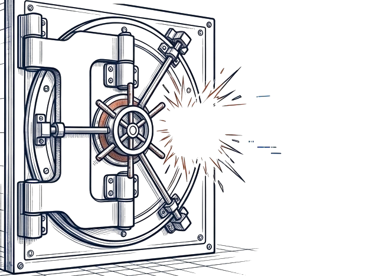
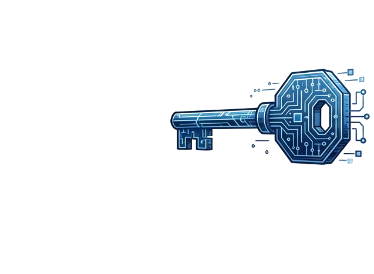

技術 (Tech)
ChatGPT 導入、自動化生成、預測分析與編輯室流程重組。
Strategic Briefing · 2025–2026
寫給媒體高層的 2025–2026 前瞻研究戰略解讀
從自動化工具到結構性轉型，
重新定義新聞業的核心價值。
按 → 或空白鍵翻頁 · F 全螢幕 · R 重播動畫
結構轉型 · Structural Shift
數位媒體領導者認為投資 AI 關係新聞業生存。
新聞機構已正式採用 AI 技術。
資料來源：Sonni (2025)
單一工具
改變生產流程與策展邏輯。
演算法把關與個人化資訊吸收。
混合收入與動態付費牆重構。
十年文獻 · 2014–2024
ChatGPT 導入、自動化生成、預測分析與編輯室流程重組。
個人化推薦、資訊氣泡形成與 AI 新聞信任挑戰。
演算法訂閱優化、混合收入與個人化付費內容。
角色進化 · Digital Curator
大量資料處理
初稿生成、
模式識別
最終編輯決策、
價值判斷、倫理課責
人機共生、多層次查核、
永續商業模式
偏見之問 · Lyu & Wu, 2026
N = 18,282
N = 18,210
每一點代表一篇報導 · 點位分佈為示意
偏見機制 · Mirror & Amplifier
政治資訊實驗 · Jennings et al., 2025

靜態反態度評論
閱讀 875 字的靜態反態度評論文章。

與 ChatGPT 進行 5 分鐘文明對話探討該議題。
研究情境：測試 AI 對抗「反態度政治資訊」的影響（N = 306）
(Jennings et al., 2025)
認知橋樑 · Machine Heuristic

觸發「機器啟發式（Machine Heuristic）」，使用者不將 AI 視為特定政黨代理人。

消除傳統閱讀敵對專欄時的「反彈效應」。

去極化後，客觀知識獲取與後續資訊尋求意願顯著提升。

署名難題 · Bien-Aimé et al., 2025
讀者歸因比例 · N = 269
的讀者認為 AI 參與了寫作
（人機協作 40.1% ＋ AI 作者 37.5%）
探索讀者如何推論「作者是誰」以及其對品質感知的影響（N = 269）。
期望違背 (Expectancy Violation)：當署名模糊時，讀者會產生責任不清的不信任感。
演算法素養 (Algorithmic Literacy)：高媒體素養讀者能輕易辨識出 AI 介入痕跡。
透明度 · Disclosure
僅聲明「本文有使用 AI」會引發猜忌並破壞信任。

多數讀者拒絕接受 AI 作為完全獨立的新聞行動者，強烈要求保留人類監督。

揭露具體 AI 任務與人類監督角色，最能建立信任並減少擔憂。
壓力測試 · De Cooker et al., 2026


跨專業協作 · Newsroom × IT
核心價值：準確(Accuracy)
運作節奏：時間(Time)
符合事實真相、具備社會脈絡。
6 週高度機動的專案衝刺。
模型統計上的 Precision 與 Recall 指標。
依賴敏捷開發與長期排程運作的 Roadmap。
組織極需能同時理解新聞價值與技術邏輯的
「邊界跨越者 (Boundary Spanners)／計算記者」來打破孤島。
人類溢價 · Amigo & Porlezza, 2025
(Amigo & Porlezza, 2025)
治理框架 · Governance
規範需隨技術持續迭代，拒絕一次性僵化政策。
實質生成內容必須標示；避免對一般後台工具過度標籤引發疲勞。
商業與技術效率絕不能凌駕於新聞專業判斷之上。
編輯室與管理層需理解 AI 幻覺；並肩負教育受眾之責。
戰略總結 · 2026+
AI 正推動組織與制度轉型，而不僅是自動化工具的替換。
偏見、資訊氣泡與雜訊將隨生產力同步放大，編輯室的警覺性必須升級。
受眾不再只問「有沒有 AI」，而是嚴格要求交代「誰負責、AI 做了什麼」。
未來新聞可信度的競爭核心，將回歸人類的可驗證性、同理心與脈絡化能力。
最終的贏家不是「被 AI 取代的新聞室」，而是「由人類主導的增強型新聞編輯室 (Human-Led Augmented Newsroom)」。
橫向持握手機可看到完整版面